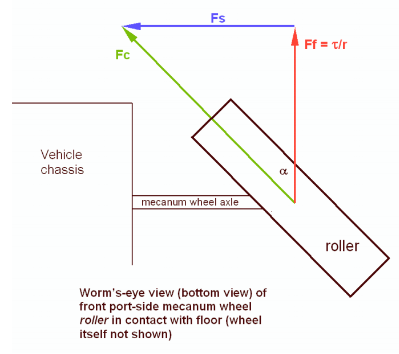
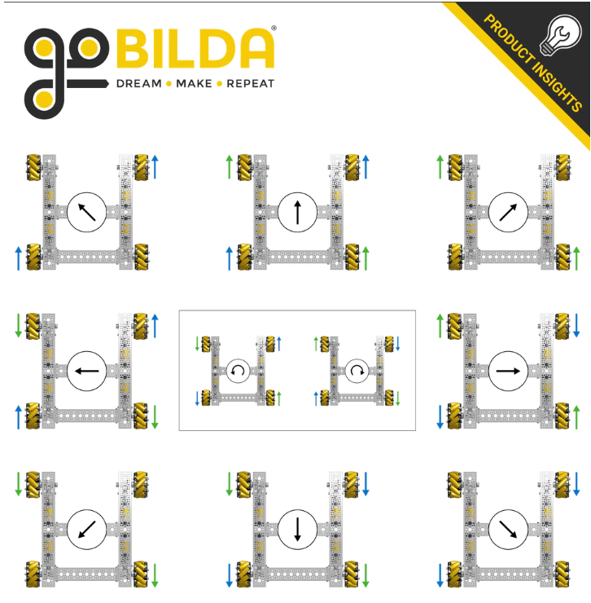
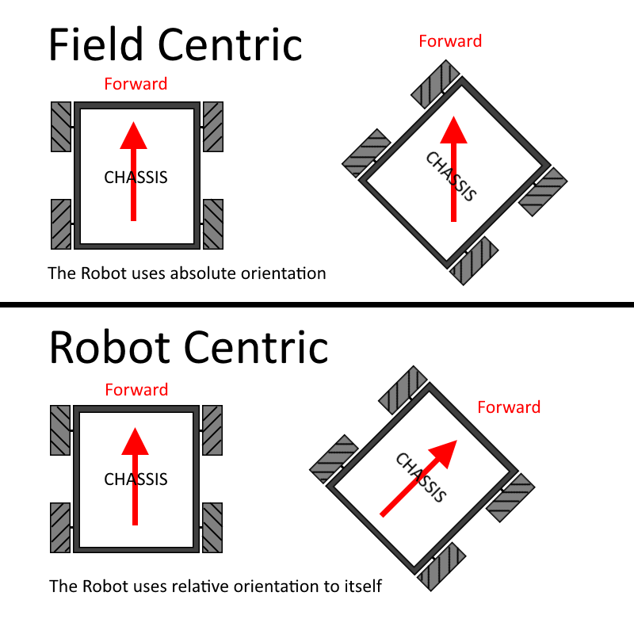
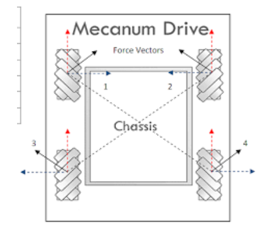

There is a famous saying, "Don't reinvent the wheel," which means that you should not waste time creating something that already exists. However, many companies have done the opposite and created unique variations of wheels. For instance, the Defense Advanced Research Projects Agency (DARPA) has invented a wheel that can fold up and fit into a backpack. Likewise, NASA created various wheels exclusively designed for driving on Mars and the moon. Some companies even created Bluetooth speakers built into their wheels. So, just like how there are different airplane models, there are different wheel variations too.
The wheel we're discussing is not DARPA's, NASA's or even a Bluetooth speaker wheel. Instead, it is a wheel that enhances a device's moveability. This wheel is known by several names, such as the Ilon wheel or the Swedish wheel. It is also a type of Omni wheel that is preferred by most FTC teams. However, the most common name for this type of wheel is mecanum.
History and Studies
Mecanum wheels were invented in 1972 by B. E. Ilon and have since been widely used in omnidirectional vehicles such as forklifts. Over the years, numerous studies have been conducted to further understand the mechanics and performance of these wheels. For instance, in a study by Yadav et al. (2023), a vibration-reducing modeling of a mecanum wheel was analyzed based on equivalent stiffness and strength analysis. Similarly, He et al. (2019) conducted an analysis of the mecanum wheel arrangement of an omnidirectional vehicle. Through these studies and others, researchers have gained a deeper understanding of mecanum wheels, allowing for continued advancements in their design and use.

Popularity in FTC
Mecanum wheels are a type of omnidirectional wheel that allows a robot to move in any direction without changing the orientation of the robot. They consist of a series of small rollers mounted at a 45-degree angle to the main rotational axis of the wheel. When the wheels are rotated in opposite directions, the rollers grip the surface and allow the robot to move forward, backward, and sideways. This makes them incredibly useful in FTC competitions, where robots need to navigate tight spaces and quickly change direction to achieve objectives. Additionally, mecanum wheels are also popular because they can be used to create holonomic drive systems, which allow the robot to rotate in place without moving forward or backward.

How Tobor uses Mecanum
Field-centric and robot-centric are two different methods of programming the controls for mecanum wheels on a robot.

Field-centric programming means that the controls are oriented to the field, so no matter which direction the robot is facing, the controls will remain consistent. This makes it easier for the driver to control the robot as they do not need to adjust their controls based on the orientation of the robot.
Robot-centric programming, on the other hand, means that the controls are oriented to the robot itself, so the driver needs to adjust their controls based on the orientation of the robot.
In our team, we use field-centric programming during the driver-controlled period because it makes it easier for the drivers to control the robot. However, during the autonomous period, we switch to robot-centric programming as it is easier to program the robot to move in specific directions based on its orientation.
In autonomous we also collaborate encoders to the mecanum wheels so that way we can tell the robot to drive by distance.

The Position Matters!
When positioning mecanum wheels, it is important to keep in mind that all the wheels must form an X on the top and an O on the bottom. This means that the wheels on the left side of the robot should be positioned in such a way that the rollers go up to the left, while the wheels on the right side of the robot should be positioned in such a way that the rollers go up to the right.
It is also important to note that not all mecanum wheels are the same. The right wheels are different from the left wheels, so it is important to make sure you are positioning the correct wheels in the correct orientation.
By positioning mecanum wheels correctly, programmers can ensure that their code will work as intended. If the mecanum wheels are not moving according to the programmer's code, they can take a look at the wheels and see if they are in the correct position. This will help to avoid any issues that may arise due to incorrect positioning of the wheels.